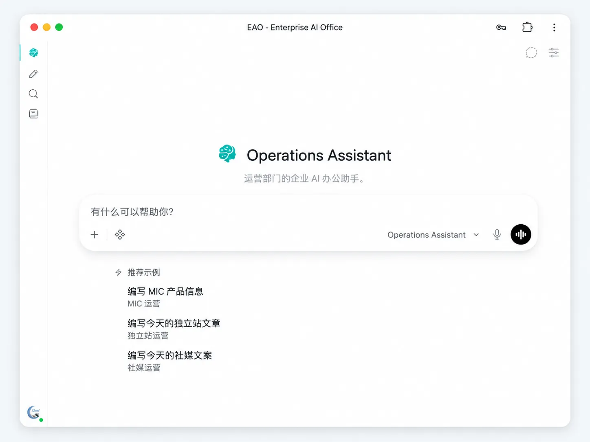

AI 应该进入企业日常工作。
EAO 把企业知识、文件和获准工具连接到部门 AI Assistant，让员工少花时间找资料、重复整理，多花时间完成真正的工作。

企业不是没有知识，而是工作经常卡在“找、问、整理”上。
很多企业已经有文件、制度、产品资料和历史经验，但这些信息分散在系统、文件夹和个人经验里。AI 如果接不上这些上下文，就很难真正进入工作。
资料分散
规格书、报价、制度、历史文件散落在 NAS、文档、Wiki 和个人目录里。
AI 不懂公司
通用 AI 很聪明，但不了解企业自己的产品、规则、历史和工作方式。
重复劳动
员工不断重复找资料、整理信息、准备回复和汇总内容。
知识依赖个人
很多经验掌握在少数老员工手里，新人只能反复询问。
从手忙脚乱，到有序协作。
很多企业不是没有资料，而是员工每天要花太多时间去找、去问、去整理。EAO 的价值，在于把企业知识、文件和工具连接到一个真正可用的工作入口里。

不是多一个聊天机器人，而是减少企业里的信息摩擦。
更快找到企业信息
让员工从企业知识和文件中获得更接近当前工作的上下文。
减少重复询问和整理
常见资料和历史信息可以被组织反复利用，而不是每次从零开始。
让 AI 带着企业背景工作
回答、分析和草稿不再只依赖通用模型知识，而能结合企业自己的内容。
让 AI 从“回答”进入“工作”
在权限允许时连接文件与工具，辅助员工把任务继续往前推进。
经验应该沉淀在组织里，而不是只存在少数老员工脑中。
EAO 把制度、历史记录和既有案例变成可复用的企业上下文，让老员工少被重复打断，也让新人更快获得已有经验。在启用 Enterprise Self-Evolution v2 的部门中，Assistant 还可以从真实工作中逐步沉淀可复用的工作方法，让部门经验在后续任务中继续发挥作用，而不需要员工额外维护一套 AI 知识流程。

客户问一个问题，销售不应该先花半小时找资料。

传统方式
今天常见的做法- 先判断资料可能在哪里
- 翻规格书和共享文件
- 询问熟悉产品的同事
- 找历史报价或类似订单
- 自己整理成客户回复
使用 EAO
EAO- 直接询问销售 Assistant
- EAO 查询企业产品知识
- 读取获准的规格文件与历史资料
- 准备带企业上下文的回复草稿
- 销售确认后发送
每个部门面对的不是同一种问题，所以不应该只有一个通用 AI。

销售
少花时间寻找产品资料、历史报价和回复依据，把更多时间留给客户沟通。
采购
辅助整理 BOM、供应商资料、历史采购信息和成本准备，不必每次从零开始。
市场
复用品牌知识、历史内容与研究资料，减少重复查找和重复研究。
财务
在授权范围内更快找到制度、文件和相关知识，同时保持部门访问边界。
运营
查找内部流程、文件和历史做法，减少重复性的日常信息整理。
管理层
在授权范围内获取跨部门企业信息，为复盘、决策和管理沟通准备材料。
AI 可以进入企业，但控制权仍然属于企业。

系统可自托管
EAO 应用栈可以运行在企业自己的基础设施中。
部门边界可区分
不同部门可以拥有不同的知识、文件和工具范围。
工具需要明确授权
Agent 能做什么，取决于企业显式开放的工具和权限。
关键动作保留人工确认
对于需要判断或正式提交的工作，可以让员工继续处于确认环节。
EAO 不是纸面架构，它来自真实企业环境。
ARMOR 是 EAO 的首个参考实现。当前蓝图围绕真实部门、企业知识、NAS 文件、浏览器/PWA 访问和日常运行维护构建；可复用部分与企业私有配置和数据保持分离。
业务人员不需要理解这些，但技术团队可以继续检查实现。
EAO 优先复用成熟上游项目，并保持薄集成。当前 ARMOR 参考部署让 Hermes 主推理与 WeKnora KnowledgeQA 共享本地 EAO Model Gateway，同时继续使用轻量 Qwen 本地服务承担 Embedding、Rerank、Vision 与语音等基础设施任务。
企业在让 AI 进入日常工作之前，通常会问这些问题。
EAO 的方向不是让企业围绕 AI 重建，而是尽量适应企业已经存在的组织、知识和系统。
关于 EAO
EAO 和直接给员工使用 ChatGPT 有什么区别？
EAO 不是多一个聊天窗口。它围绕部门，把企业知识、文件、获准工具和访问边界组织给不同 Assistant 使用，让 AI 能结合企业自己的上下文工作，而不只是依赖通用模型知识。
EAO 只能回答问题吗？
不只是。根据企业开放的工具和权限，EAO 还可以辅助查询、分析、准备草稿、处理文件，并把部分任务继续往前推进；需要判断或正式提交的环节仍可以保留人工确认。
每个部门都使用同一个 AI Assistant 吗？
不一定。销售、采购、运营、财务和管理层可以使用不同的 Assistant，并拥有不同的知识、文件、工具和访问范围。
EAO 是概念项目，还是已经在真实企业运行？
EAO 来自真实企业环境的持续使用和迭代。ARMOR 是首个参考实现，同时可复用的 EAO 组件与企业私有配置和数据保持分离。
已经在使用飞书或其它企业系统？
我们已经有飞书 Bot，还有必要使用 EAO 吗？
飞书 Bot 可以是一个很好用的交互入口，但 EAO 解决的是更大的问题：AI 如何与部门、企业知识、文件、工具和权限一起工作。两者可以共存，并不需要二选一。
EAO 会取代飞书吗？
不会。EAO 的设计目标不是替换企业已有的协作系统。飞书可以继续承担沟通、协作和业务流程，EAO 则围绕这些既有资产增加企业 AI 工作能力。
飞书里的知识库、云盘和资料需要重新迁移吗？
不一定需要迁移。在完成相应配置后，知识层可以同步支持的飞书知识和云盘数据源，让企业继续在原来的系统里维护资料，而不是为了使用 EAO 再搬一次家。
NAS、共享盘、Wiki 和现有业务系统还能继续使用吗？
可以。EAO 的一个核心思路就是：保留现有系统，在它们周围增加 AI。企业已有的存储、知识来源和业务工具仍然可以继续存在。
数据、权限与部署
公司的资料会不会全部发送给外部 AI？
这取决于企业选择的模型供应商和集成方式。EAO 应用本身可以自托管，但系统自托管并不自动意味着所有模型请求都会留在本地。
不同部门可以保持不同的访问边界吗？
EAO 的设计支持为不同部门区分知识、文件和工具范围。实际边界仍取决于企业如何配置权限和集成。
必须使用本地大模型吗？
不必须。EAO 可以使用本地模型、外部模型供应商，或两者混合。当前参考部署通过 EAO Model Gateway 保持应用层模型路由稳定，因此底层模型或 Provider 调整时，不需要重新设计各部门 Assistant。企业仍可根据能力、成本、延迟和数据要求进行选择。
是不是必须一次把整套 EAO 都部署完？
不需要。更合适的方式是先从一个真实业务问题、一个部门或一个工作场景开始，只有在确实有价值时再逐步增加能力。